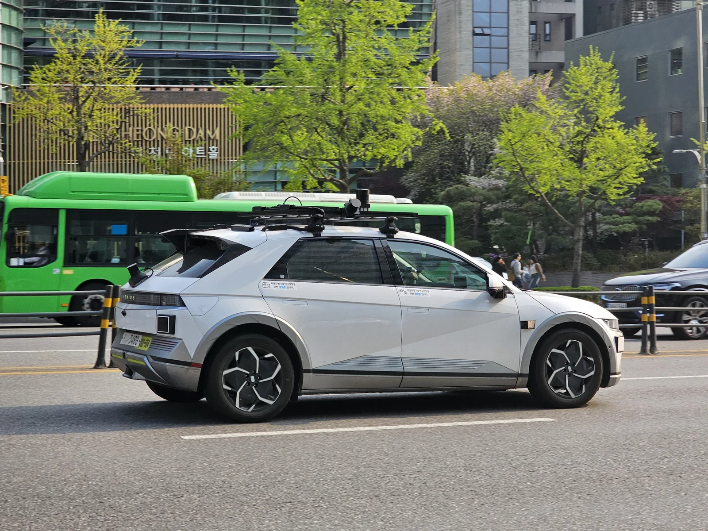
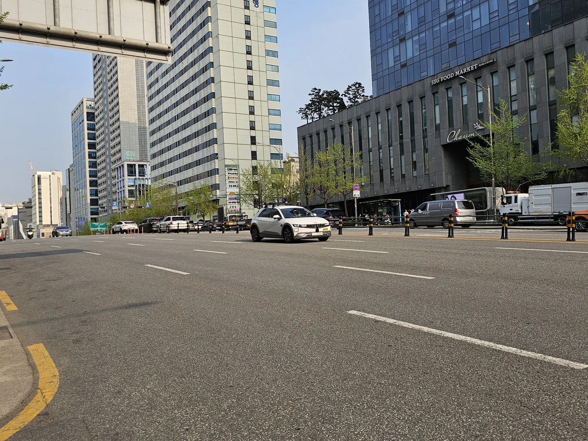
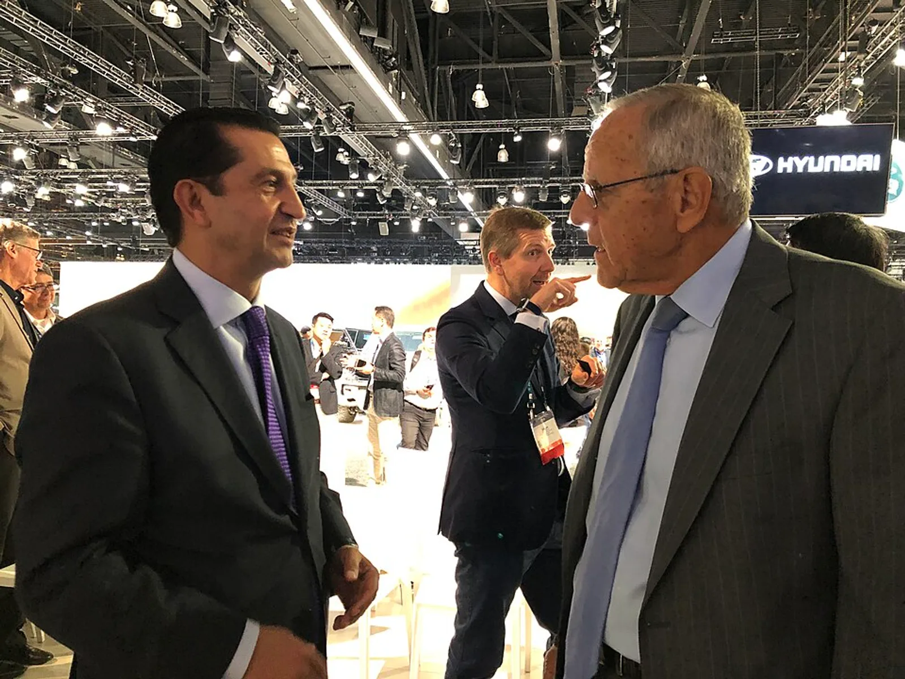
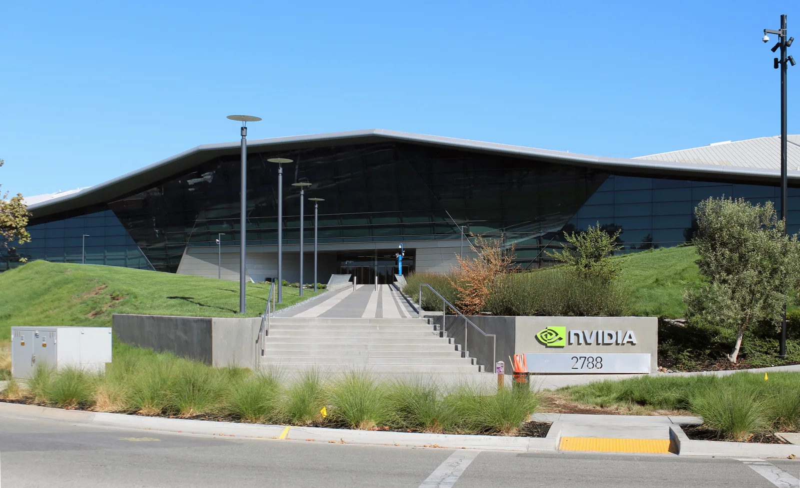
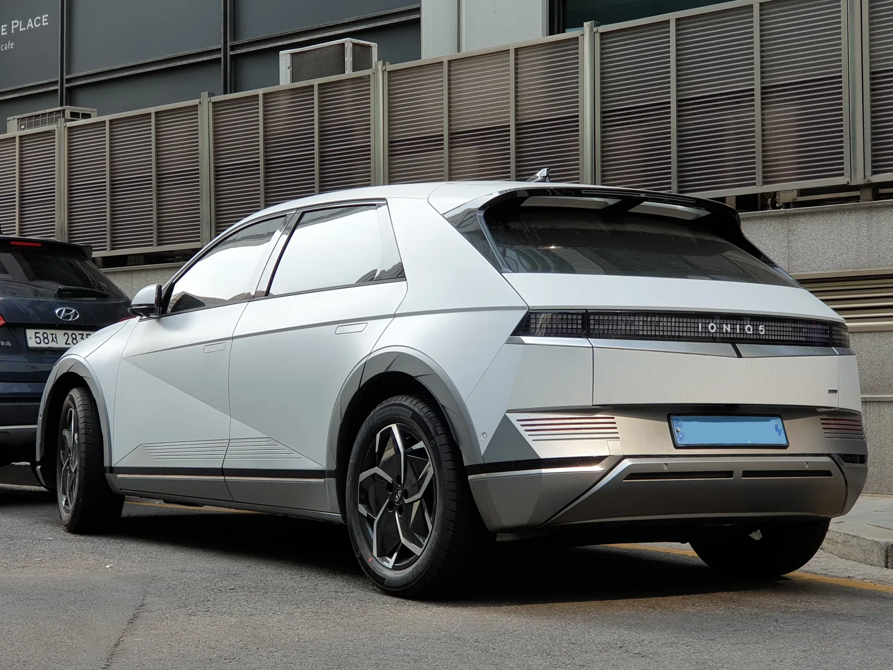

▲ 현대차그룹은 모셔널과 함께 아이오닉5 기반 로보택시로 자율주행 데이터를 축적해왔다. 자체 기술의 양산 목표는 이번에 2029년으로 늦춰졌다 ⓒ Damian B Oh, Wikimedia Commons (CC BY-SA 4.0)
2년 전까지만 해도 현대차는 2027년 안에 자체 개발 자율주행 시스템을 양산차에 얹겠다고 했다. 그 목표가 2029년으로 미뤄졌다.
현대차 호세 무뇨스 사장은 최근 외신 인터뷰에서 자체 레벨2++ 첨단 운전자보조 시스템(ADAS) 양산 목표 시점을 2029년 말로 조정한다고 밝혔다. 이유는 명확했다. 그는 "데이터를 수집하고 안전 성능을 검증하는 데 시간이 더 필요하다"고 말했다. 기존에 밝혔던 2027년 목표에서 2년이 늦춰진 셈이다. 현대차·기아 자율주행개발센터를 이끄는 박민우 본부장도 지난 9월 11일 경기 성남 포티투닷 본사에서 열린 '현대차그룹 자율주행 미디어데이'에서 "전략적으로 일부러 약간 늦춘 것"이라며 속도보다 완성도를 택했다는 취지로 설명했다.
1. 뭐가 바뀌었나 — 목표 연도만 2년 밀린 게 아니다
이번 발표의 핵심은 단순한 일정 조정이 아니라 두 갈래 전략의 재정비다. 현대차는 그동안 자체 기술을 곧장 양산에 태우는 방식을 그려왔지만, 이제는 '엔비디아 기반 시스템을 먼저 양산해 실주행 데이터를 쌓고, 그 데이터를 자체 기술 고도화에 활용한다'는 투트랙으로 방향을 틀었다.
| 구분 | 기존 계획 | 수정된 계획 |
|---|---|---|
| 자체 개발 시스템 양산 | 2027년 말 | 2029년 하반기 |
| 과도기 대응 | 별도 계획 없음 | 엔비디아 기반 레벨2+(2028 상반기)·레벨2++(2028 하반기) 선출시 |
| 센서 체계 | 모셔널 등 개별 센서 구성 혼재 | 엔비디아 드라이브 하이페리온 10 기준으로 표준화 |
현대차·기아 자율주행개발센터는 이번 연기를 설명하며 3단계 로드맵을 제시했다. 2027년까지 주행·주차 등 핵심 기능의 완성도를 높이고, 2028년에는 다양한 예외 상황(엣지 케이스) 데이터를 확보해 안전성을 끌어올린 뒤, 2029년에는 국내외 인증에 대응하며 양산을 준비하겠다는 것이다. 박민우 본부장은 "7~8년 전 구매한 차량도 고도화된 AI를 적용할 수 있도록 설계하겠다"고도 언급해, 소프트웨어 업데이트로 구형 차량까지 아우르는 장기 전략을 시사했다.

▲ 서울 강남 도심에서 포착된 아이오닉5 자율주행 시험차. 현대차는 이런 실도로 주행으로 쌓은 데이터를 안전 검증에 활용하고 있다고 설명했다 ⓒ Damian B Oh, Wikimedia Commons (CC BY-SA 4.0)
2. 왜 늦췄나 — "속도보다 완성도"
연기 배경으로 가장 자주 언급되는 단어는 '안전 검증'이다. 무뇨스 사장의 발언대로, 레벨2++ 수준이라 하더라도 각국 인증 기준과 실도로 예외 상황에 대응하려면 방대한 주행 데이터 축적이 전제돼야 한다는 것이 현대차 측 설명이다. 레벨2·2+·2++는 어디까지나 운전자 보조 단계로, 사고 발생 시 책임이 운전자에게 귀속되는 구조다. 이 단계에서부터 안전성 시비가 불거지면 향후 레벨3 이상으로 넘어갈 때 신뢰 기반 자체가 흔들릴 수 있다는 우려가 깔려 있다.
✅ 레벨2/2+/2++, 헷갈리기 쉬운 단계 정리
· 레벨2: 차선유지·차간거리 등 기본 운전자 보조, 운전자가 상시 개입 필요
· 레벨2+/2++: 고속도로 등 일부 구간에서 손을 떼는 시간이 늘어나는 고도화 운전자 보조, 다만 법적 책임은 여전히 운전자에게 있음
· 레벨3 이상: 조건부·완전 자율주행으로 넘어가는 단계, 사고 시 책임이 제작사로 일부 이전될 수 있어 안전 검증 기준이 훨씬 까다로움
· 이번에 연기된 것은 현대차 자체 개발 레벨2++ 시스템의 양산 시점이며, 레벨3 이상에 대한 별도 상용화 시점은 이번 발표에 포함되지 않았다

▲ 호세 무뇨스 현대차 사장(왼쪽). 2019년 LA 오토쇼 당시 현대차 북미법인을 이끌던 시절의 모습으로, 이후 2025년 현대차그룹 글로벌 최고경영자에 올랐다 ⓒ Jcdemier, Wikimedia Commons (CC BY-SA 4.0)
박민우 본부장이 "전략적으로 일부러 약간 늦췄다"고 표현한 대목도 같은 맥락이다. 해외 매체 인사이드EVs는 박 본부장의 발언을 "지금 서둘러 양산에 들어가면 어중간한 레벨2++ 시스템을 내놓는 데 그쳐, 원래 목표했던 수준에 크게 못 미칠 위험이 있다"는 취지로 전했다. 경쟁사보다 먼저 내놓는 것보다, 장기적으로 신뢰할 수 있는 완성도를 갖추는 쪽에 무게를 두겠다는 의미로 해석된다. 관련 인터뷰 전문은 아래에서 확인할 수 있다.
무뇨스 사장의 발언이 담긴 보도는 지피코리아에서 확인 가능하다. 관련 보도 바로가기
3. 그 사이 공백은 누가 메우나 — 엔비디아 '드라이브 하이페리온 10'
자체 기술이 준비될 때까지 현대차는 엔비디아와 손을 잡는다. 현대차는 엔비디아의 자율주행 플랫폼 '드라이브 하이페리온 10'을 기반으로 한 양산차를 2028년부터 단계적으로 선보일 계획이다. 2028년 상반기에는 레벨2+ 수준을, 하반기에는 레벨2++ 수준을 적용한 차량을 순차 출시한다는 구상이다.
| 항목 | 내용 |
|---|---|
| 플랫폼 | 엔비디아 드라이브 하이페리온 10 |
| 출시 시점 | 2028년 상반기(레벨2+) → 2028년 하반기(레벨2++) |
| 센서 구성 | 카메라 10개, 전방 레이더 1개, 초음파 센서 12개(라이다 미탑재) |
| 모셔널과의 관계 | 기존에 모셔널이 사용해온 센서 체계를 하이페리온 10 중심으로 표준화 |
흥미로운 대목은 라이다가 빠졌다는 점이다. 카메라와 레이더, 초음파 센서 조합만으로 레벨2++까지 대응하겠다는 것인데, 이는 원가 부담을 낮추면서도 대중 양산차에 폭넓게 적용하려는 의도로 풀이된다. 다만 이 구성은 어디까지나 엔비디아 기반 '과도기' 시스템에 해당하며, 2029년 목표로 하는 현대차 자체 개발 시스템(아트리아 AI)의 최종 센서 구성과는 다를 수 있다.

▲ 미국 캘리포니아 산타클라라의 엔비디아 본사. 현대차는 자체 기술이 준비되는 2029년까지 엔비디아의 '드라이브 하이페리온 10' 플랫폼을 활용한 시스템을 먼저 양산할 계획이다 ⓒ Coolcaesar, Wikimedia Commons (CC BY-SA 4.0)
4. 최종 목표는 '아트리아 AI' — 현대차가 직접 만드는 자율주행 두뇌
엔비디아와의 협력은 어디까지나 다리 역할이다. 현대차가 궁극적으로 지향하는 것은 자체 개발한 자율주행 AI '아트리아 AI(Atria AI)'다. 이번 연기로 아트리아 AI 기반 시스템의 양산 목표는 2029년 하반기로 설정됐다. 회사 안팎에서는 이를 두고 엔비디아 기반 양산 경험과 모셔널의 실도로 자율주행 데이터를 아트리아 AI 고도화에 축적해나가는 '데이터 선순환' 전략으로 설명한다.
모셔널은 현대차그룹과 앱티브의 합작사로, 그동안 미국 라스베이거스 등지에서 아이오닉5 기반 로보택시로 상용 자율주행 시험 서비스를 운영해왔다. 모셔널은 별도로 연내 라스베이거스에서 완전 무인(운전자 없는) 로보택시 상용화를 목표로 하고 있어, 아트리아 AI·엔비디아 기반 양산차와는 시기와 사업 구조가 다른 트랙으로 굴러간다. 이렇게 축적된 라이다·카메라 융합 데이터와, 엔비디아 기반 양산차에서 새로 쌓일 대규모 실주행 데이터가 합쳐지면서 아트리아 AI의 안전성 검증 속도를 끌어올린다는 게 현대차 측 구상이다.
해외 매체 테크타임스 보도에 따르면, 아트리아 AI는 '비전-언어-행동(Vision-Language-Action)' 모델 구조를 채택했다. 카메라로 들어온 영상 신호와 조향·가속 등 실제 주행 제어 사이에 언어 기반 추론 단계를 하나 더 끼워 넣는 방식으로, 단순 모방학습 방식의 자율주행 시스템이 놓치기 쉬운 돌발 상황(엣지 케이스)을, 인터넷 규모의 데이터에서 학습한 일반 상식으로 보완하려는 접근이라는 설명이다.
📍 아트리아 AI, 아직 확인 안 된 것들
현재까지 공식적으로 확인된 것은 '2029년 하반기 양산 목표'와 '2028년까지 데이터 확보·검증에 집중한다'는 로드맵 정도다. 최종 센서 구성, 첫 적용 차종, 구체적인 레벨(2++를 유지할지 레벨3 요소를 일부 포함할지) 등은 아직 공식 발표되지 않았다. 이 부분은 후속 발표를 지켜볼 필요가 있다.

▲ 현대 아이오닉5. 모셔널의 로보택시 서비스와 각종 자율주행 시험차의 기반 모델로 쓰이며 현대차그룹 자율주행 데이터 축적의 핵심 축을 담당해왔다 ⓒ Damian B Oh, Wikimedia Commons (CC BY-SA 4.0)
5. 업계는 왜 연기를 '나쁜 신호'로만 보지 않나
자율주행 상용화 시점을 미룬 사례는 현대차만이 아니다. 업계에서는 완성차·빅테크를 막론하고 레벨3 이상 자율주행 목표 시점을 실제보다 낙관적으로 잡았다가 일정을 뒤로 미루는 일이 반복돼왔다고 본다. 안전 검증에 필요한 데이터의 양과 각국 인증 절차의 복잡성이 초기 예상을 웃도는 경우가 많기 때문이다. 이런 맥락에서 이번 발표를 "기술이 밀린 것"이 아니라 "검증 기준을 더 엄격하게 세운 것"으로 해석하는 시각도 있다.
경쟁 구도로 보면 현대차는 스스로도 '후발주자'라는 점을 부인하지 않는 분위기다. 테크타임스에 따르면 테슬라는 이미 자사 차량의 운전자 감독하 주행(FSD) 데이터를 90억 마일 이상 쌓았고, 웨이모 역시 상용 로보택시 운영을 통해 대규모 돌발 상황 데이터를 확보해둔 상태다. 이에 맞서 현대차가 내세우는 무기는 현대차·기아·제네시스를 합쳐 연간 약 700만 대에 이르는 판매 규모다. 로보택시 전업 스타트업은 갖추기 힘든 수준의 데이터 수집 네트워크를 양산차 판매망 자체로 확보하겠다는 구상이다.
여기에 더해 현대차는 자율주행 기술을 다른 업체에 공급하는 역할도 함께 맡고 있다. 왈드오토 등 외신에 따르면 현대차는 미국 웨이모에 아이오닉5 전기차를 공급하는 다년 계약을 2024년부터 이어오고 있으며, 이르면 2026년 4분기부터 미국 조지아주 메타플랜트 아메리카에서 생산한 차량을 웨이모 자율주행 로보택시용으로 납품할 예정이다. 이는 현대차그룹의 자체 브랜드(아트리아 AI·모셔널)와는 별개로, 완성차 제조사로서 웨이모 같은 자율주행 전문 업체에 하드웨어 플랫폼을 대는 협력 관계다. 즉 현대차의 자율주행 전략은 ①자체 기술(아트리아 AI) ②엔비디아 협력(하이페리온 10) ③모셔널 로보택시 사업 ④웨이모 등 외부 자율주행 업체용 차량 공급까지 네 갈래로 동시에 진행되고 있는 셈이다. 중국 업체들이 저가 라이다·자체 칩 기반으로 자율주행 상용화 속도를 끌어올리고 있는 상황에서, 현대차는 단일 기술 경쟁보다 이런 다각화 전략으로 리스크를 분산하는 쪽을 택한 것으로 풀이된다.
| 구분 | 내용 |
|---|---|
| 단기(~2028년) | 엔비디아 하이페리온 10 기반 레벨2+·2++ 양산 안착, 예외 상황 데이터 확보 |
| 중기(2029년) | 자체 개발 아트리아 AI 기반 시스템 양산, 국내외 인증 대응 |
| 장기 | 레벨3 이상으로의 확장 여부 및 시점, 구형 차량 대상 소프트웨어 업데이트 지원 범위 |
다만 소비자 입장에서 보면 체감 변화 시점이 뒤로 밀린다는 점은 분명하다. 애초 2027년이면 현대차 자체 기술이 실린 신차를 만날 수 있을 것으로 기대됐던 소비자들은, 최소 2029년 하반기까지 엔비디아 기반 과도기 시스템을 거쳐야 하는 셈이다. 현대차가 이 기간 동안 소프트웨어 업데이트나 가격 정책 등으로 어떤 보완책을 내놓을지가 다음 관전 포인트로 꼽힌다.
6. 요약
현대차가 자체 개발 레벨2++ 자율주행 시스템의 양산 목표를 2027년 말에서 2029년 하반기로 2년 늦췄다. 호세 무뇨스 사장은 "데이터를 수집하고 안전 성능을 검증하는 데 시간이 더 필요하다"고 이유를 밝혔고, 박민우 자율주행개발센터장은 "전략적으로 일부러 약간 늦춘 것"이라고 설명했다.
그 사이 공백은 엔비디아와의 협력으로 메운다. 엔비디아 '드라이브 하이페리온 10' 플랫폼 기반 시스템이 2028년 상반기 레벨2+, 하반기 레벨2++ 수준으로 먼저 양산되며, 모셔널이 써온 센서 체계도 이 플랫폼 중심으로 표준화된다.
최종 목표는 현대차 자체 AI '아트리아 AI' 기반 시스템으로, 2029년 하반기 양산이 목표다. 다만 최종 센서 구성이나 첫 적용 차종 등 세부 사항은 아직 공식화되지 않아, 후속 발표를 지켜볼 필요가 있다.